מה שמפעילים במדריך הזה ממשיך לרוץ גם בלעדיכם - זו בדיוק המטרה שלו. לכן כל תרגיל כאן בנוי כך שגם אם תשכחו ממנו לגמרי, הוא לא נוגע בשום קובץ, לא שולח שום דבר, ולא עולה כסף מעבר למנוי שכבר יש לכם.
מונחים שכדאי להכיר לפני שמתחילים
- משימה מתוזמנת (Scheduled task) · משימת Cowork שקבעתם לה מועד וקצב - למשל כל יום ראשון בשמונה בבוקר - והיא רצה לבד, בלי שתפתחו את קלוד.
- Dispatch · שליחת משימה לקלוד מהטלפון או מכל מכשיר אחר, והמשך אותה שיחה מהמחשב במשרד.
- Live artifact · לוח אינטראקטיבי שקלוד בונה ושומר, והוא מתעדכן מעצמו בנתונים טריים בכל פעם שפותחים אותו.
- Connector (חיבור) · גשר בין קלוד לשירות שאתם כבר עובדים בו - יומן, מייל, אחסון בענן. מחברים פעם אחת, ומאז קלוד יכול לשלוף משם בעצמו.
- Skill (סקיל) · שיטת עבודה ארוזה: הוראות ודוגמאות שקלוד מפעיל מעצמו כשהוא מזהה משימה שמתאימה להן.
- Plugin (פלאגין) · חבילה שאורזת כמה יכולות יחד - למשל כמה סקילים וחיבור - מותקנת בבת אחת.
הדוח שמחכה מוכן ביום ראשון בבוקר: מה זו משימה מתוזמנת
עוד רגע מהמשרד. יום ראשון, תשע בבוקר, ישיבת צוות שבועית. מישהו - בדרך כלל הכי צעיר בחדר - ישב אתמול חצי שעה לרכז מה קרה השבוע בתיקים: מה התקדם, מה נתקע, אילו מועדים מתקרבים. אותה חצי שעה, כל שבוע, מחדש.
בדיוק לעבודות האלה קיימת משימה מתוזמנת: משימת Cowork רגילה לגמרי - כמו אלה שכתבתם במדריכים 1 ו-2 - שקיבלה גם שעון. קבעתם לה מועד וקצב, והיא רצה לבד. ביום ראשון בבוקר הדוח כבר יושב ומחכה.
מה מתאים לתזמון, ומה לא:
הכלל של Legal Mind פשוט, והוא נשען על מה שכבר למדתם: מתזמנים רק משימה שמכינה טיוטה, ולעולם לא משימה שפועלת כלפי חוץ.
מתאים לתזמון: ריכוז שבועי של מסמכים חדשים בתיקייה. דוח מועדים מתקרבים. רשימת נקודות פתוחות בתיק. סיכום פנימי מכל סוג.
לא מתזמנים, גם לא כשזה מפתה: שליחת מייל או הודעה לכל גורם. עדכון מסמך מקור. כל פעולה שיוצרת מחויבות. הסיבה היא לא שקלוד לא מסוגל - היא שבמשימה מתוזמנת אתם לא שם כשזה קורה. טיוטה שגויה מחכה בתיקייה ומתוקנת. הודעה שגויה שנשלחה - נשלחה.
יוצרים משימה מתוזמנת ראשונה: דוח שבועי על תיק אלומה
נבנה את הדוח השבועי מהסיפור שפתחנו בו, על תיק התרגול שלנו.
נקודה אחת להבין לפני היצירה, כי היא קובעת איך המשימה תרוץ: משימה מתוזמנת רצה בענן, בשרתים של אנתרופיק, גם כשהמחשב שלכם כבוי. אבל תיקיית תיק אלומה יושבת על המחשב שלכם - וכדי שהמשימה תגיע אליה, המחשב צריך להיות דלוק ו-Claude Desktop פתוח בשעת הריצה. בטופס היצירה יש מתג בדיוק לזה, ותכף תראו אותו.
שלב 1 - פותחים את מסך המשימות המתוזמנות. בסרגל הצד של Claude Desktop לוחצים על Scheduled.
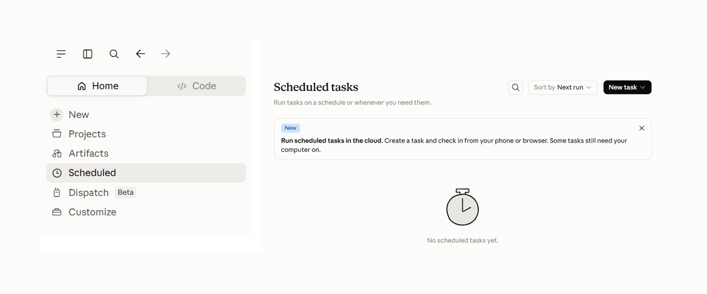
מסך המשימות המתוזמנות, והדרך אליו מסרגל הצד.
- 1 הפריט
Scheduledבסרגל. - 2 הכפתור
New task.
שלב 2 - יוצרים משימה חדשה. לוחצים על New task. נפתחות שתי דרכים: Create with Claude, שבה מתארים במילים והוא בונה את הטופס, ו-Set up manually, שבה ממלאים הכל בעצמכם. בפעם הראשונה בוחרים Set up manually - כדי לראות במו עיניכם כל שדה שנקבע.
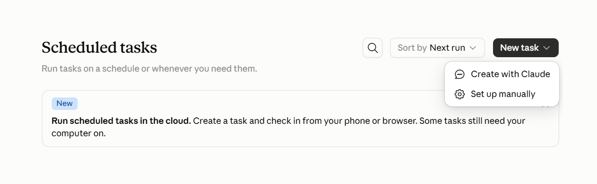
שתי דרכים ליצור משימה. בפעם הראשונה - ידנית, כדי לראות כל שדה.
- 1
Create with Claude- מתארים במילים והוא בונה. - 2
Set up manually- האפשרות שנבחר.
שלב 3 - ממלאים את הטופס.
בשדה Name: דוח שבועי - תיק אלומה - תרגול.
ומיד מתחת לשדה תופיע שורה אפורה שאומרת באיזה שם המשימה תישמר בפועל, עם מקפים במקום רווחים. זה לא באג, וזה לא משנה כלום מבחינתכם - השם שתראו ברשימה נשאר השם שכתבתם.
בשדה Description, שגם הוא מסומן בכוכבית ולכן חובה: שורה אחת מספיקה, ואפשר לחזור על שם המשימה. זה מה שיופיע מתחת לשם ברשימת המשימות, ולכן שווה שיהיה בו משהו שיזכיר לכם בעוד חודש מה המשימה עושה.
בשדה Instructions מדביקים את המשימה עצמה:
בשדה Project or folder בוחרים את תיק אלומה - תרגול - בלי זה המשימה לא תדע איפה התיק, וזו הסיבה מספר אחת לדוח שלא נוצר.
בשדה התדירות: פעם בשבוע, ביום ובשעה שבהם המחשב שלכם בדרך כלל דלוק - למשל יום חמישי בעשר בבוקר.
בשדה מצב האישור משאירים Manually approve, כמו בכל הסדרה. ומה קורה עם אישורים כשאתם לא שם? משימה שעצרה לבקש אישור ואין מי שיענה אמורה להמתין - להופיע במסך Scheduled עומדת בשאלה, ולהמשיך אחרי שתאשרו. את המצב הזה לא הצלחנו לייצר בבדיקות שלנו, כי המשימה רצה עד הסוף בלי לעצור, וזה מה שאנחנו יודעים לומר עליו ביושר.
מה שכן ודאי, ונבדק שוב ושוב לאורך הסדרה: שום פעולה לא קורית בלי אישור. ובדיוק בגלל זה בחרנו לתרגול דוח פנימי קטן: גם אם המשימה תמתין לכם יום, שום דבר לא נשבר.
ומדליקים את המתג Run on your computer - כי המשימה שלנו צריכה את התיקייה שבמחשב. המתג מגיע כבוי, ולצידו כתוב בדיוק מה שהסברנו: משימה כזאת רצה רק כשהמחשב דלוק, והיא נחוצה כשצריך גישה לקבצים מקומיים.
וברגע שמדליקים אותו נוספת שורה שלא הייתה שם קודם: משימות מתוזמנות רצות עם השהיה אקראית של כמה דקות. כלומר משימה שקבעתם לשמונה בבוקר לא בהכרח תרוץ בשמונה בדיוק, ולכן גם ברשימה כתוב אחר כך ~8:00 AM עם סימן הטילדה. אין דרך לבטל את זה, ואין בזה שום בעיה בדוח בוקר - אבל אם תכננתם משימה שחייבת לרוץ בשנייה מדויקת, זה הרגע לדעת שזה לא הכלי לזה.
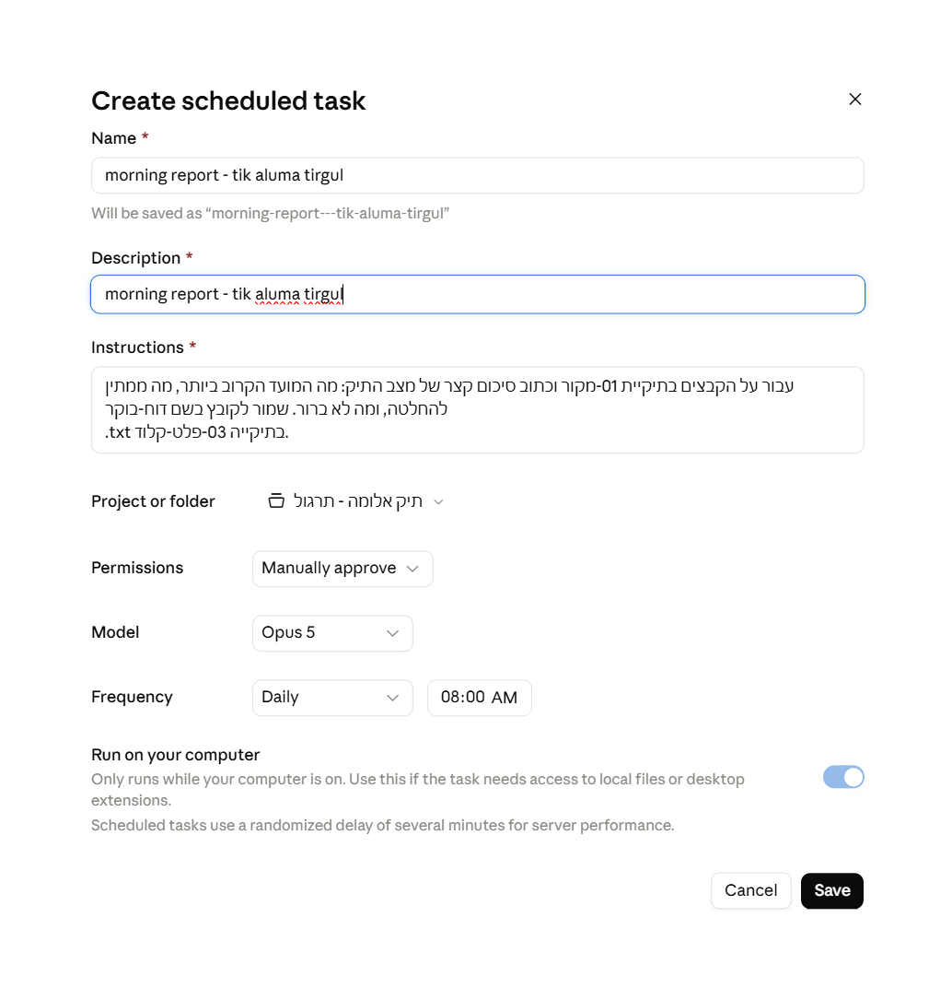
טופס המשימה המתוזמנת, שדה אחר שדה - וכל מה שהמסך מוסיף מעצמו.
- 1 שדה
Name, ומתחתיו השורה שאומרת באיזה שם הקובץ יישמר בפועל. - 2 שדה
Instructions- כאן יושבת המשימה עצמה, בדיוק כפי שהייתם כותבים אותה בתיבה. - 3
Project or folder- הפרויקט של תיק אלומה, וזה מה שנותן למשימה את הגישה לתיקייה. - 4
Frequency- יומי, ולידו השעה. - 5 המתג
Run on your computer. מגיע כבוי, ומדליקים אותו - בלעדיו המשימה רצה בענן ולא רואה את התיקייה שלכם.
שלב 4 - בודקים את הניסוח פעם אחת, לפני שמחכים שבוע.
אל תחכו לריצה המתוזמנת הראשונה כדי לגלות שהניסוח עקום. הדרך הפשוטה לבדוק: פותחים שיחת Cowork רגילה בתוך אותו Project, ומדביקים בה בדיוק את אותו נוסח. מה שיקרה שם הוא מה שיקרה בריצה המתוזמנת - אותה משימה, אותה תיקייה, אותם אישורים.
מריצים, מחכים לסיום, ופותחים את 03-פלט-קלוד - הדוח שם, ואתם בודקים אותו בדיוק כמו כל תוצר: שלוש הבדיקות ממדריך 2, פרק 07.
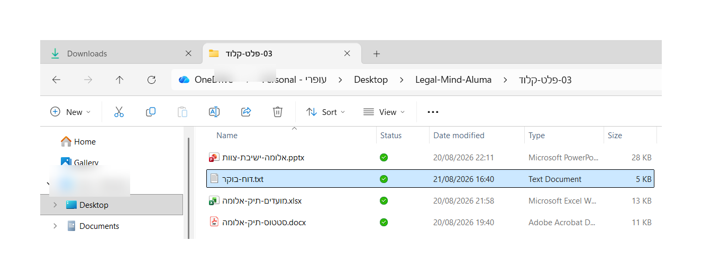
הדוח הראשון נוצר, ושמו כולל את התאריך.
- 1 קובץ הדוח בתיקיית
03-פלט-קלוד.
וכך נראה הדוח עצמו כשפותחים אותו. בראשו שם התיק ותאריך ההכנה, ומתחתיהם הפרקים שביקשתם. הפרק שאותו קוראים קודם כל הוא המועד הקרוב ביותר - ולידו כתוב מאיזה מסמך הוא נלקח, כדי שתוכלו לבדוק בעצמכם בעשר שניות.
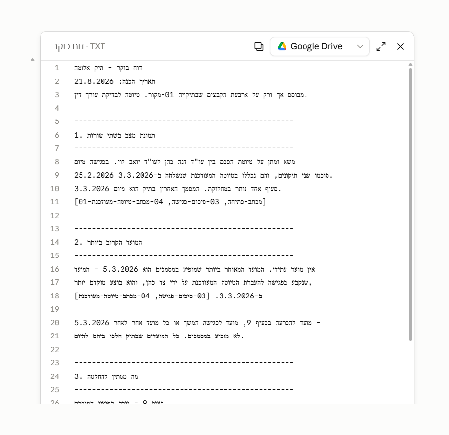
הדוח הראשון, כפי שהוא נראה: כותרת, תאריך הכנה, וסעיפים.
- 1 שם הדוח ותאריך ההכנה שלו, בשתי השורות הראשונות.
- 2 הפרק שאותו קוראים קודם: המועד הקרוב ביותר, ומאיזה מסמך הוא נלקח.
ואחרי השמירה, המשימה יושבת ברשימה - עם השם, התיאור שכתבתם, אייקון מחשב קטן שאומר שהיא רצה מקומית, ותג ירוק עם המועד הבא.
ומעל הרשימה הופיעה שורה חדשה: משימה שמוגדרת לרוץ על המחשב עובדת רק כשהוא ער ומחובר. ולידה מתג בשם Keep awake - מי שרוצה שהמחשב לא יירדם לפני משימת הבוקר יכול להדליק אותו. הוא לא חובה, והמשימה לא נכשלת בלעדיו - היא פשוט מחכה להזדמנות הבאה שבה המחשב ער.
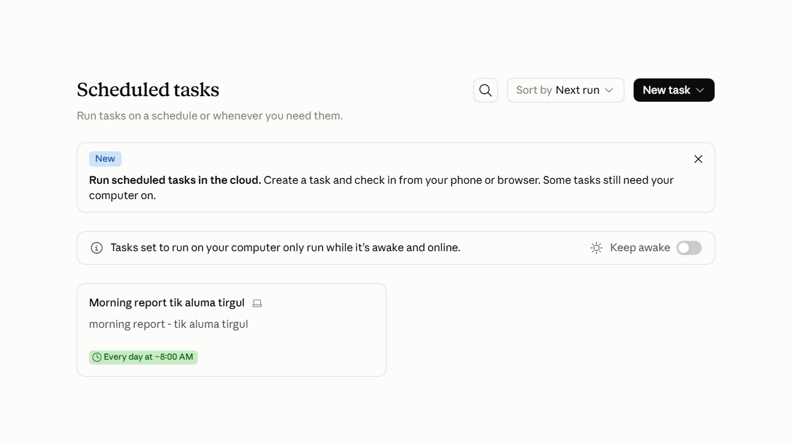
המשימה ברשימה: המועד הבא, וכל ריצה שנשמרה עם הדיווח שלה.
- 1 השורה שמזכירה שמשימה שרצה על המחשב עובדת רק כשהוא ער, ולידה המתג
Keep awake. - 2 כרטיס המשימה: השם, התיאור, ואייקון המחשב שאומר שהיא רצה מקומית.
- 3 תג המועד הבא:
Every day at ~8:00 AM.
ואחרי הריצה המתוזמנת הראשונה האמיתית, בשבוע הבא, נכנסים שוב ל-Scheduled ובודקים: המשימה רצה במועד, הדוח נוצר, ושום קובץ אחר לא השתנה. המסך של המשימה מציג גם את המועד הבא וגם את היסטוריית הריצות - כל ריצה נשמרת עם הדיווח המלא שלה, כמו כל משימה. משימה מתוזמנת מקבלת אמון בהדרגה, ריצה אחרי ריצה - לא מראש.
בדיקות חובה לפני שממשיכים: המשימה מופיעה ברשימת Scheduled עם המועד הבא שלה. הרצה ידנית אחת הסתיימה והדוח נבדק. והמשימה לא נוגעת בשום תיקייה מחוץ לתיק אלומה.
Dispatch: שולחים לקלוד משימה מהטלפון בדרך לדיון
נתחיל מהסוף: מה זה Dispatch, במשפט אחד:
זה שלט רחוק למחשב שלכם.
זהו. זה כל הסיפור. המחשב במשרד עושה את העבודה, והטלפון שבכיס רק אומר לו מה לעשות.
ולמה בכלל צריך שלט רחוק:
כי קלוד שבטלפון שלכם לא רואה את התיקיות שלכם.
זה ההבדל היחיד שחשוב להבין כאן, ואחריו הכל מסתדר. קלוד בטלפון הוא בן שיח מצוין - שואלים אותו שאלה, הוא עונה. מבקשים ממנו לנסח פסקה, הוא מנסח. אבל תיק אלומה לא נמצא בטלפון שלכם. הוא יושב בתיקייה על המחשב במשרד, ולטלפון אין דרך להגיע לשם.
ולכן, עד עכשיו, כל עבודה על תיק אמיתי הייתה חייבת לחכות לרגע שבו אתם יושבים מול המחשב.
Dispatch מבטל את ההמתנה הזאת. אתם כותבים מהטלפון, וההודעה נוסעת למחשב שלכם במשרד - והמחשב, עם התיקיות שלו, עושה את העבודה בזמן שאתם בדרך.
איך זה נראה ביום שלכם:
התמונה הכי מדויקת היא זו: יש לכם מתמחה מצוין שיושב במשרד מול המחשב שלכם. אתם בדרך לדיון, ואתם שולחים לו הודעה בוואטסאפ: "תכין לי בבקשה טבלת מועדים מעודכנת בתיק אלומה". הוא מכין, ושולח לכם הודעה כשסיים. כשאתם חוזרים למשרד, זה כבר על השולחן.
Dispatch הוא בדיוק זה, רק שהמתמחה הוא קלוד, וההודעה נשלחת מתוך אפליקציית קלוד.
וקלוד עצמו מציג לכם כרטיס כזה בכניסה הראשונה, עם דוגמאות משלו:
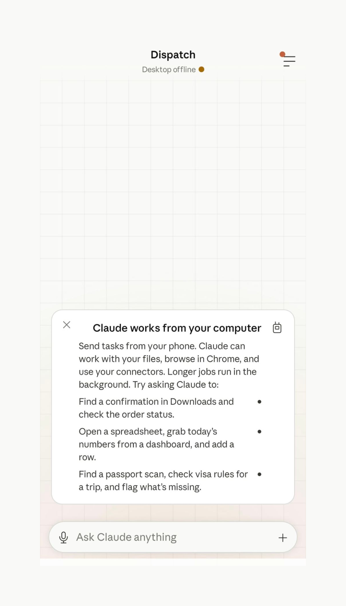
הכרטיס שקלוד מציג בעצמו: מה אפשר לבקש ממנו מהטלפון.
- 1 המשפט שאומר את העיקר: המשימות רצות על המחשב שלכם, וארוכות שבהן רצות ברקע.
- 2 שלוש הדוגמאות שקלוד מציע. בעולם המשפטי מחליפים אותן בבקשות מהתיק, ודוגמאות מופיעות בפתיחת הפרק.
הדוגמאות שלו כלליות - הזמנות, גיליונות, דרכונים. אצלנו הן נראות אחרת, וכך הן נראות ביום עבודה במשרד:
בדרך לבית המשפט, שבע וחצי בבוקר. "תעבור על תיק אלומה ותכתוב לי מה המועד הקרוב ביותר שעדיין לא עבר." מגיעים לדיון עם התשובה.
אחרי פגישה, ברכב. "תוסיף לסיכום הפגישה שבתיקיית הפלט שורה שאומרת שהצד השני ביקש דחייה של שבועיים." הסיכום מעודכן לפני שחזרתם.
בערב, מהספה. "תכין לי רשימה של כל הקבצים בתיק שלא נגעו בהם חודש." בבוקר זה מחכה.
סדר הפעולות, וכאן נופלים רובם: את Dispatch מגדירים קודם במחשב, ורק אחר כך בטלפון. מי שמתחיל מהטלפון יקבל שגיאה, ולא יבין למה.
שלב 1 - במחשב: פותחים את Dispatch ומשאירים אותו מוכן:
פותחים את Claude Desktop במחשב - זה שבו יושבות התיקיות שלכם.
בסרגל הצד לוחצים על Dispatch. הוא יושב מתחת ל-Scheduled, ויש לידו תווית Beta:
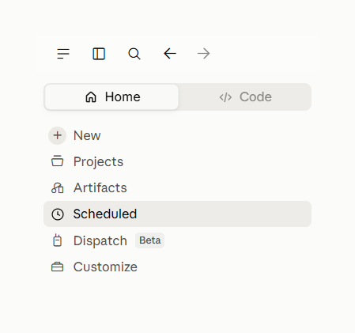
הפריט Dispatch בסרגל הצד של המחשב, מתחת ל-Scheduled.
- 1 הפריט
Dispatchעם התוויתBetaשלידו. מי שלא רואה אותו אצלו - ההסבר בסוף הפרק.
אם אינכם רואים אותו אצלכם - קפצו לקטע האחרון בפרק, "ולמי שעובד בשני חשבונות".
ומהלחיצה הזאת נפתח החלון הגדול שמימין - לוח הבקרה של Dispatch. זה המסך שיישאר פתוח ויחכה לטלפון:
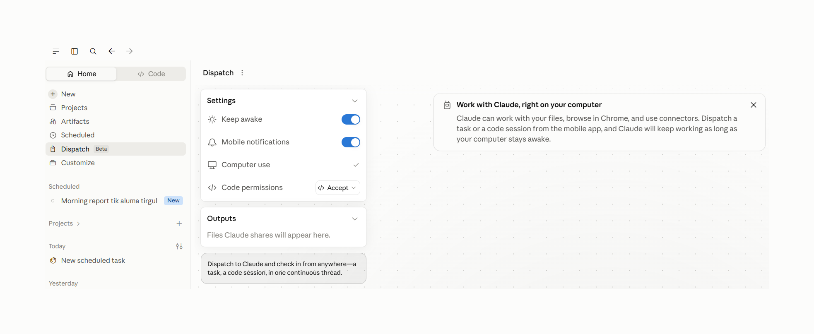
מסך Dispatch במחשב: ארבע הגדרות, ואזור לקבצים שקלוד יחזיר.
- 1
Keep awake- שומר על המחשב ער כדי שמשימה שנשלחה מהטלפון תוכל לרוץ. - 2
Mobile notifications- הטלפון מקבל התראה כשהמשימה מסתיימת או כשהיא שואלת. - 3
Outputs- כאן יופיעו הקבצים שקלוד יצר במשימות שנשלחו מהטלפון. - 4 השורה שמסבירה מה המסך הזה: משימה או סשן קוד, בשרשור אחד רציף.
בפעם הראשונה ייתכן שתתבקשו לאשר משהו או ללחוץ על כפתור התחלה - מאשרים, וממשיכים. מה שחשוב שיישאר על המסך אחרי זה הוא שני המתגים העליונים:
Keep awake - שומר על המחשב ער. זו ההגדרה שהופכת את כל העניין למעשי. שלחתם משימה מהטלפון בתשע בבוקר, והמחשב במשרד נכנס לשינה בשמונה וחצי? המשימה לא תרוץ. כשהמתג דלוק, המחשב לא נרדם מעצמו כל עוד יש עבודה. כשהוא כבוי, המשימה פשוט מחכה שמישהו יעיר את המחשב - היא לא נמחקת ולא נכשלת, היא רק לא זזה.
Mobile notifications - הטלפון מדווח לכם. כשקלוד סיים, או כשהוא עצר כדי לשאול שאלה, אתם מקבלים התראה בטלפון. כשזה כבוי אתם צריכים להיזכר לבד להיכנס ולבדוק.
Computer use ו-Code permissions - שתי שורות שלא נוגעות לרוב עורכי הדין. הראשונה שייכת ליכולת הניסיונית שבה קלוד מפעיל תוכנות אחרות במחשב, והשנייה קובעת מה מותר לו לעשות בסשן קוד. אם אתם לא עובדים בקוד ולא הפעלתם את היכולת הניסיונית - אין לכם מה לעשות בשורות האלה.
Outputs - כאן יופיעו הקבצים. משימה ששלחתם מהטלפון ויצרה קובץ תניח אותו כאן, כדי שתמצאו אותו כשתשבו מול המחשב. כרגע כתוב שם שהאזור ריק, וזה בדיוק המצב הנכון לפני המשימה הראשונה.
ועכשיו הדבר היחיד שנשאר לעשות במחשב: להשאיר אותו ככה. לא לסגור את האפליקציה, לא להעביר למצב שינה. המחשב מוכן, ואנחנו עוברים לטלפון.
שלב 2 - בטלפון: מחברים אותו למחשב:
מתקינים את אפליקציית קלוד בטלפון - היא בחנות האפליקציות, בחיפוש Claude - ונכנסים עם אותו חשבון בדיוק שאיתו אתם מחוברים במחשב. בתוך האפליקציה בוחרים בתפריט Dispatch, ונפתח מסך הפתיחה.
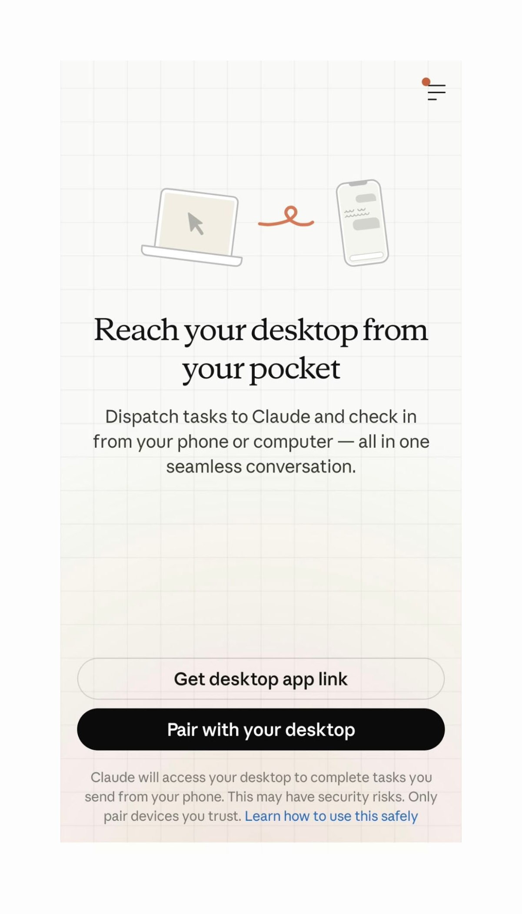
Dispatch בטלפון: מכאן מחברים את הטלפון למחשב, ומכאן שולחים משימה בדרך לדיון.
- 1 הכפתור
Pair with your desktop- החיבור הראשון בין הטלפון למחשב. - 2 שורת האזהרה של אנתרופיק: קלוד ייגש למחשב שלכם, ולכן מחברים רק מכשירים שאתם סומכים עליהם.
במסך הזה שני כפתורים, ולוחצים על התחתון: Pair with your desktop. העליון, Get desktop app link, רק שולח לכם קישור להורדת האפליקציה למחשב.
ומתחתיהם כתובה אזהרה שאסור לדלג עליה: מרגע החיבור, קלוד ניגש למחשב שלכם כדי לבצע משימות שאתם שולחים מהטלפון. אנתרופיק אומרת במפורש שיש בזה סיכוני אבטחה, ושיש לחבר רק מכשירים שאתם סומכים עליהם. במשרד עורכי דין המשמעות פשוטה: מחברים את הטלפון האישי שלכם, שנעול בקוד, ולא מכשיר משותף ולא טלפון של מישהו אחר.
וכשהחיבור מצליח, זה מה שרואים:
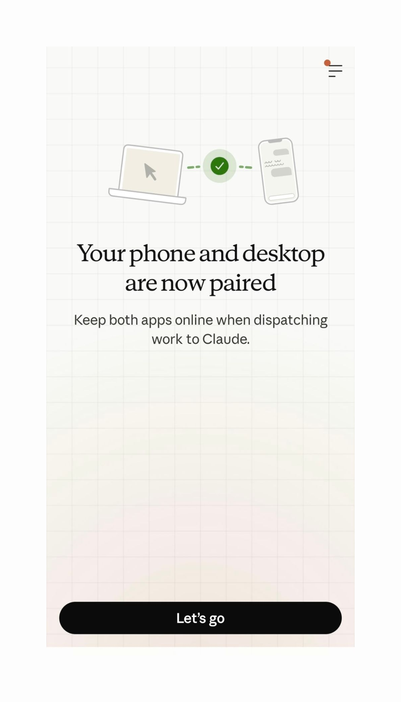
החיבור הצליח: הטלפון והמחשב מכירים זה את זה מעכשיו.
- 1 השורה שמזכירה את התנאי היחיד: שתי האפליקציות צריכות להיות פתוחות בזמן שליחת משימה.
- 2 הכפתור
Let's go, שסוגר את ההגדרה ופותח את מסך העבודה.
שימו לב לשורה שמתחת לכותרת - היא מזכירה את התנאי היחיד שנשאר מעכשיו: שתי האפליקציות פתוחות בזמן ששולחים משימה. לוחצים Let's go, וזהו - החיבור מאחורינו.
והנה אותה נקודה שכבר פגשתם במשימות המתוזמנות, והיא חשובה כפליים כאן: אם המשימה צריכה קבצים שיושבים על המחשב במשרד, המחשב חייב להיות דלוק ו-Claude Desktop פתוח בזמן שקלוד עובד. שולחים מהטלפון משימה על תיק אלומה כשהמחשב במשרד כבוי? היא תחכה. משימה שכל החומר שלה בענן - רצה גם בלי המחשב.
ועכשיו הדבר עצמו: שולחים משימה מהטלפון:
כל מה שעשינו עד כאן היה הכנה. זה החלק שבשבילו באנו, והוא הפשוט מכולם.
וזה מסך העבודה, וכל מה שיש בו הוא שתי שורות שחשוב להכיר:
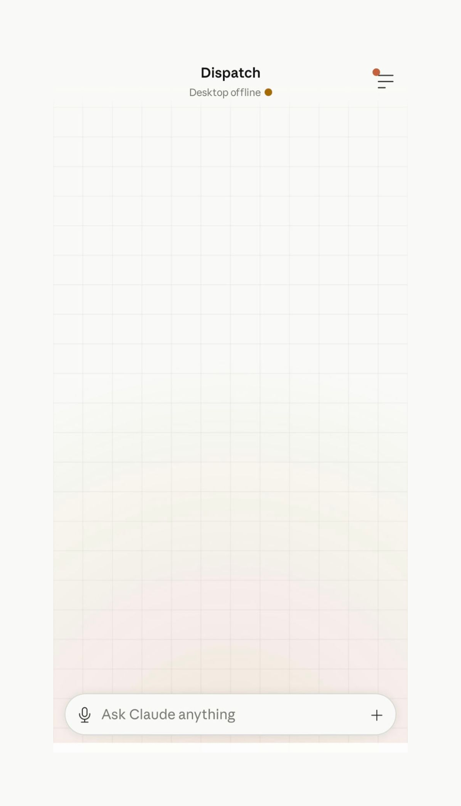
מסך העבודה בטלפון: שורת מצב למעלה, ותיבת כתיבה למטה.
- 1 שורת המצב מתחת לכותרת. כאן כתוב אם המחשב זמין כרגע - בצילום הזה הוא לא, ולכן כתוב Desktop offline.
- 2 תיבת הכתיבה. כאן כותבים את המשימה בעברית, ושולחים.
למעלה, מתחת לכותרת, שורת מצב. היא אומרת אם המחשב זמין כרגע. בצילום הזה הוא לא היה, ולכן כתוב Desktop offline עם נקודה כתומה. כשהמחשב ער והאפליקציה פתוחה בו, השורה מתחלפת.
ולמטה, שורת כתיבה אחת, ובה כתוב Ask Claude anything. כותבים בה את המשימה בעברית, בדיוק כמו שהייתם כותבים אותה במחשב, ושולחים. זה הכל.
ומה כותבים? אותו דבר שלמדתם במדריך 1: מה החומר, מה התוצר, ואיפה לשמור. לדוגמה, משימה שאפשר לשלוח עכשיו:
שימו לב שביקשנו תשובה בלי קובץ. זו בכוונה: למשימה ראשונה מהטלפון עדיף לבקש משהו שאפשר לקרוא על המסך הקטן, ורק כשזה עובד עוברים למשימות שיוצרות קבצים.
ומה קורה אחרי השליחה: קלוד מתחיל לעבוד על המחשב במשרד, לא בטלפון. אם הפעלתם התראות, הטלפון יודיע לכם כשהוא סיים או כשהוא שואל שאלה. ואם המשימה יצרה קובץ - הוא נשמר בתיקייה שביקשתם על המחשב, ומופיע גם באזור Outputs שבמסך Dispatch שם.
והדבר הכי נוח: כשתשבו מול המחשב, אותה שיחה ממשיכה שם מהמקום שבו עצרה. אין העתקה, אין שליחה לעצמכם - זו פשוט אותה שיחה, בשני מכשירים.
איך יוצאים מכל זה, ואיך חוזרים למסך הרגיל:
זו השאלה שמטרידה כל מי שמסיים את החיבור, והתשובה מרגיעה: אין ממה לצאת.
בטלפון: מסך Dispatch הוא מסך אחד מבין כמה באפליקציה. פותחים את התפריט (שלושת הקווים בפינה העליונה) ובוחרים שיחה רגילה - וזהו, אתם בחזרה בקלוד הרגיל. אין כפתור "צא ממצב Dispatch", כי אין מצב שצריך לצאת ממנו. ואין שום דבר בטלפון שצריך לנתק.
במחשב: לוחצים בסרגל על Home או על כל פריט אחר, והלשונית נסגרת מאחוריכם. גם כאן אין מצב מיוחד שנשאר דלוק.
והשיחות שלכם? לא נגענו בהן. החיבור לא משנה שום דבר בשיחות הקיימות, בפרויקטים, או בהגדרות - הוא רק מוסיף אפשרות לשלוח משימה מהטלפון.
ובדקנו גם מה מסתתר בתפריט הנקודות:
ליד הכותרת Dispatch במחשב יש שלוש נקודות קטנות, ומי שלא בטוח מה קורה שם - הנה מה שיש בפנים:
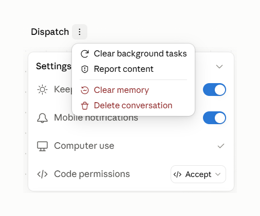
תפריט שלוש הנקודות: מה אפשר לנקות, ומה אין כאן בכלל.
- 1 Clear background tasks - עוצר משימות שרצות כרגע ומנקה את הרשימה. לא מנתק שום דבר.
- 2 Clear memory ו-Delete conversation, באדום - מוחקים את מה שנצבר בשיחה, ואי אפשר לשחזר. בתרגול אין בהם צורך.
וזו התשובה הכי חשובה כאן: אין שם "נתק את הטלפון". אין כפתור ביטול חיבור, אין איפוס, ואין שום דבר שצריך לזכור לעשות בסוף היום.
מה שכן יש הן ארבע פעולות ניקוי:
- Clear background tasks · עוצר משימות שרצות כרגע ומנקה את הרשימה. שימושי אם שלחתם משהו בטעות - וזה לא מנתק שום דבר.
- Report content · דיווח לאנתרופיק על תשובה בעייתית. לא קשור לחיבור.
- Clear memory · מוחק את מה שקלוד צבר בשיחה הזאת.
- Delete conversation · מוחק את השיחה עצמה.
שתי האחרונות כתובות באדום, ובצדק: הן מוחקות ואי אפשר לשחזר. בתרגול אין בהן צורך, ואם לחצתם על אחת מהן בטעות - החיבור עצמו לא נפגע, רק התוכן של השיחה.
Live artifact: לוח תיק שמתעדכן לבד
התוצרים שהכנתם עד עכשיו הם קבצים: נוצרו פעם אחת, וכדי לרענן אותם צריך משימה חדשה. Live artifact הוא סוג אחר של תוצר: לוח אינטראקטיבי שקלוד בונה פעם אחת, ומאז הוא מתעדכן מעצמו בכל פעם שפותחים אותו.
למשל: לוח מצב לתיק אלומה שמציג את המועד הקרוב, את הנקודות הפתוחות ואת הקבצים שנוספו - ובכל בוקר שתפתחו אותו, הוא כבר יציג את המצב של אותו בוקר, בלי שביקשתם.
יוצרים אותו כמו כל תוצר: בתוך ה-Project של התיק, מתארים מה הלוח צריך להציג ומאיפה, ומבקשים לשמור אותו כ-Artifact. הנה הנוסח שאיתו נבנה הלוח שבמדריך הזה:
ובאמצע העבודה קלוד עוצר, ומבקש אישור לפרסם את הלוח:
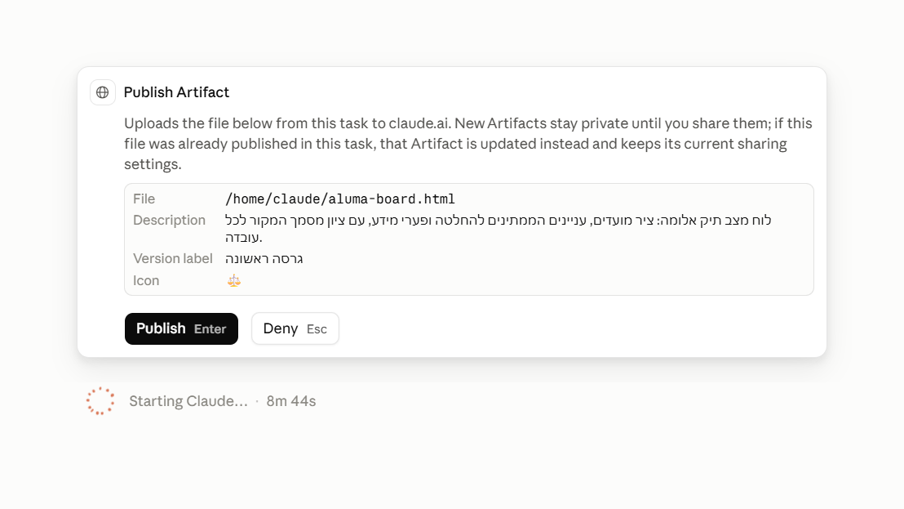
גם פרסום לוח עוצר ומבקש אישור, ואומר מראש מה יקרה לקובץ.
- 1 המשפט שמרגיע: לוח חדש נשאר פרטי עד שאתם משתפים אותו בעצמכם.
- 2 פרטי הקובץ: שם, תיאור, תווית גרסה ואייקון - קלוד מילא אותם בעצמו.
- 3 הכפתורים:
Publishמעלה את הלוח,Denyמבטל ולא נוצר כלום.
הרגע הזה נראה מבהיל יותר משהוא, ולכן שווה לקרוא מה בדיוק כתוב בחלון. "פרסום" כאן לא אומר שמישהו יראה את הלוח: כתוב במפורש שלוח חדש נשאר פרטי עד שאתם משתפים אותו בעצמכם. הפעולה מעלה את הקובץ לחשבון שלכם, וזה הכל.
ושימו לב לפרטים שקלוד מילא בעצמו: שם הקובץ, תיאור, תווית גרסה ואייקון. תווית הגרסה היא מה שיאפשר לו לעדכן את אותו לוח בהמשך במקום ליצור אחד חדש - וכתוב שם שגם הגדרות השיתוף יישמרו.
לוחצים Publish, ובלי הלחיצה הזאת פשוט לא נוצר לוח. מי שילחץ Deny יקבל את התוכן בשיחה, ולא יקבל לוח שאפשר לחזור אליו.
וכשהמשימה מסתיימת, הדיווח מכיל את הלוח עצמו:
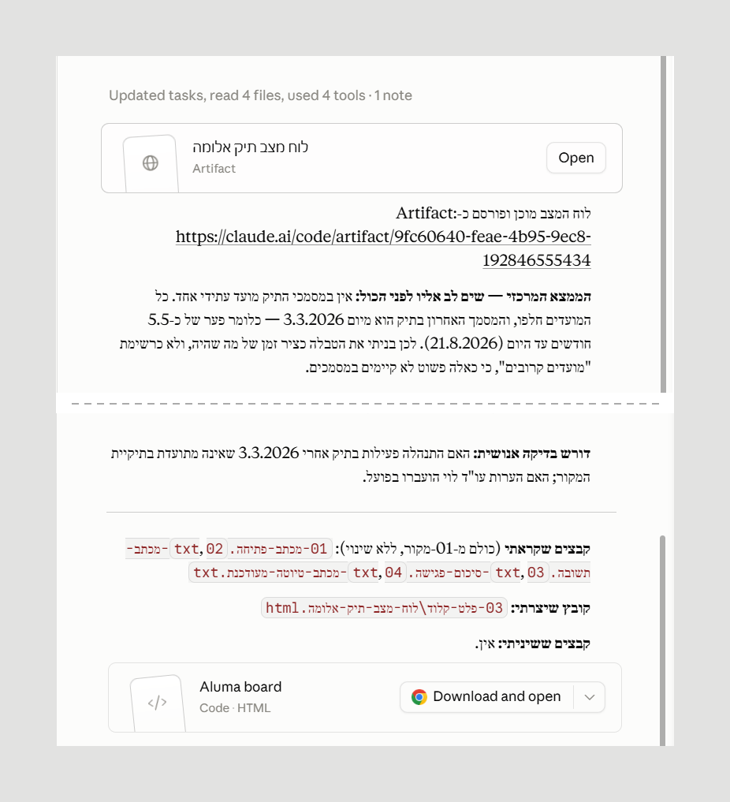
הלוח מוכן: כרטיס לפתיחה, ומתחתיו הדיווח - כולל מה שקלוד לא מצא.
- 1 כרטיס הלוח עם הכפתור
Open. מכאן פותחים אותו, ולא צריך לחפש קובץ. - 2 הממצא המרכזי: אין במסמכים מועד עתידי אחד. קלוד אמר זאת במקום להמציא רשימת מועדים קרובים.
- 3 הפסקה
דורש בדיקה אנושית- מה שקלוד לא יכול היה לוודא לבד. - 4 שורות הקבצים: ארבעה נקראו ללא שינוי, ואחד נוצר. בשורה התחתונה כתוב שקבצים שונו: אין.
בראש הדיווח יש כרטיס עם כפתור Open - לוחצים עליו והלוח נפתח. לצידו מופיע גם קישור, והלוח נשמר גם כקובץ בתיקיית הפלט שלכם, כמו כל תוצר אחר בסדרה.
וכך נראה הלוח כשפותחים אותו:
לחיצה על Open פותחת חלונית בצד המסך, ובה הלוח עצמו. הוא לא נפתח בדפדפן ולא בקובץ נפרד - הוא יושב לצד השיחה, ואפשר לגלול בו בזמן שממשיכים לעבוד.
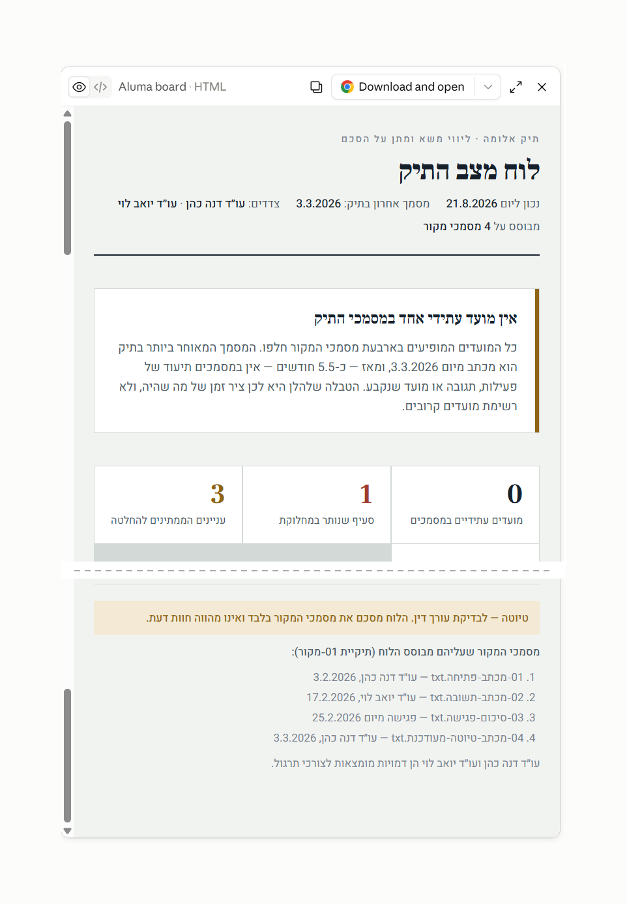
הלוח כפי שהוא נפתח בצד המסך: כותרת, הממצא, המספרים, והערת הטיוטה בסוף.
- 1 שורת הזיהוי של הלוח: לאיזה תאריך הוא נכון, ועל כמה מסמכי מקור הוא מבוסס.
- 2 הממצא שקלוד בחר להציב בראש: אין מועד עתידי אחד במסמכי התיק.
- 3 ארבעת המספרים: עניינים ממתינים, סעיף במחלוקת, מועדים עתידיים - אפס - ופערי מידע.
- 4 הערת הטיוטה בסוף הלוח: הלוח מסכם את מסמכי המקור בלבד ואינו חוות דעת.
- 5 רשימת מסמכי המקור שעליהם הלוח מבוסס, עם תאריך לכל אחד.
שימו לב לארבעה דברים שהופכים אותו ללוח שאפשר לסמוך עליו:
בראשו כתוב לאיזה תאריך הוא נכון, מהו המסמך האחרון בתיק, ועל כמה מסמכי מקור הוא מבוסס. לוח בלי השורה הזאת הוא לוח שאי אפשר לדעת אם הוא עדכני.
הממצא שקלוד בחר להציב בראש הוא לא מספר יפה אלא האמת הלא נוחה: אין מועד עתידי אחד בתיק. וארבעת המספרים מתחתיו כוללים אפס - אפס מועדים עתידיים במסמכים. הוא לא הסתיר את זה בתוך טבלה.
כל שורה בלוח נושאת את המקור שלה. ליד כל אירוע כתוב מאיזה מכתב הוא נלקח, וליד כל עניין פתוח יש קופסה בשם לבדיקה אנושית שאומרת מה בדיוק צריך לברר. זה מה שהופך לוח למשהו שאפשר להביא לפגישה.
ובסופו הערת טיוטה, ורשימת מסמכי המקור עם תאריך לכל אחד: הלוח מסכם את מסמכי המקור בלבד ואינו חוות דעת.
והלוח הזה הוא גם קובץ, שאפשר לקחת אתכם:
בראש החלונית יש כפתור עם חץ קטן, ומאחוריו שלוש אפשרויות:
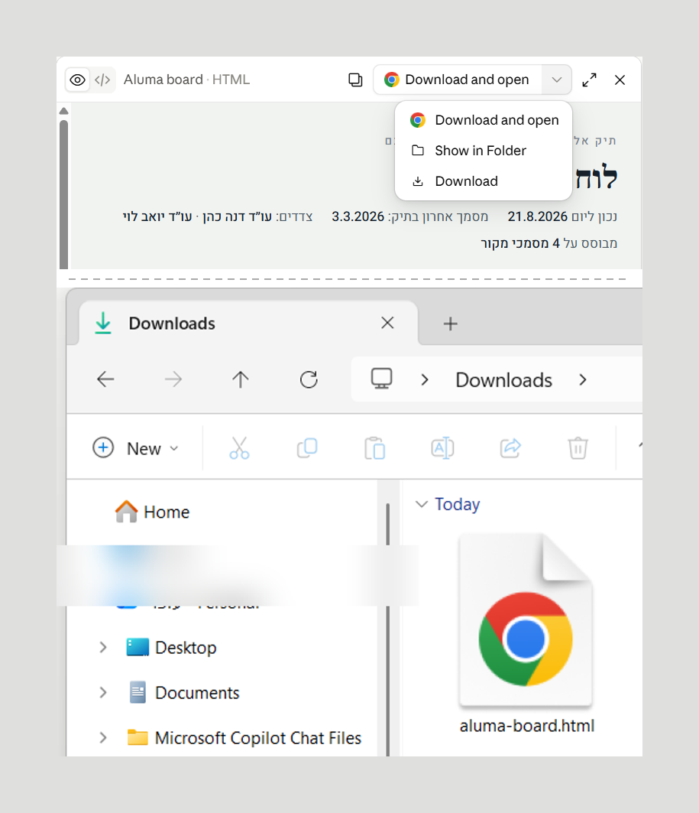
שלוש אפשרויות לקובץ הלוח, והקובץ עצמו אחרי הבחירה בראשונה.
- 1 Download and open - שומר את הקובץ ופותח אותו בדפדפן באותה פעולה.
- 2 Show in Folder ו-Download - שמירה בלבד, בלי לפתוח.
- 3 הקובץ שנחת: aluma-board.html, בתיקיית ההורדות.
Download and open · שומר את הקובץ ופותח אותו מיד בדפדפן - זה שמוגדר אצלכם כברירת מחדל. פעולה אחת, שתי תוצאות.
Show in Folder · פותח את התיקייה שבה הקובץ יושב.
Download · שומר בלבד, בלי לפתוח.
ומה שנשמר הוא קובץ אחד בשם aluma-board.html - קובץ דף רגיל, שיושב בתיקיית ההורדות שלכם.
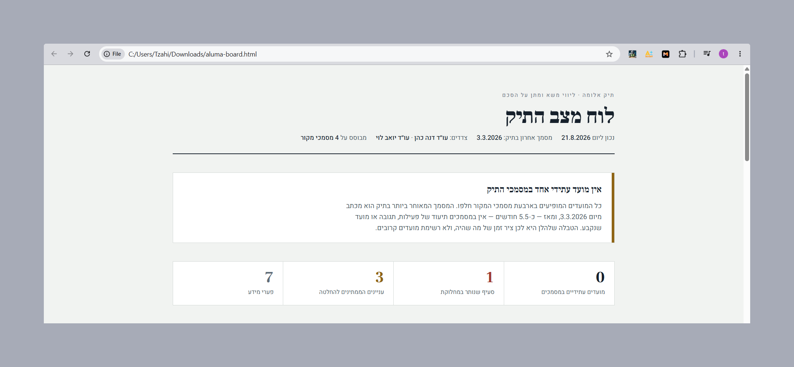
אותו לוח בדיוק, פתוח ברוחב מלא בדפדפן - מתוך קובץ שיושב אצלכם במחשב.
- 1 שורת הכתובת: זה קובץ מקומי, לא אתר. הוא ייפתח גם בלי אינטרנט.
- 2 הלוח עצמו, ברוחב מלא: הממצא, וארבעת המספרים בשורה אחת.
וכך הוא נראה כשהוא נפתח: אותו לוח בדיוק, ברוחב מלא. שימו לב לשורת הכתובת - זה קובץ שיושב במחשב שלכם, לא אתר. אפשר להעביר אותו לתיקיית התיק, לשלוח אותו לעורך דין אחר, ולפתוח אותו גם בלי חיבור לאינטרנט.
ואיפה הלוח מחכה מחר בבוקר:
לא צריך לחפש אותו בשיחות. בסרגל הצד יש פריט בשם Artifacts, ושם יושבים כל הלוחות שיצרתם:
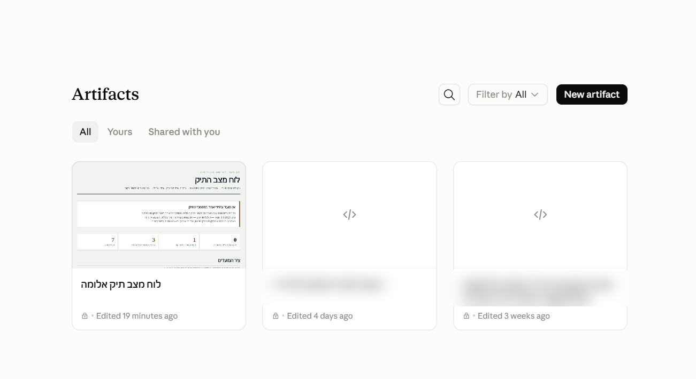
מסך ה-Artifacts: כאן הלוח ממתין, בלי לחפש אותו בשיחות.
- 1 כרטיס הלוח
לוח מצב תיק אלומה, עם תצוגה מקדימה של תוכנו. - 2 אייקון המנעול ושורת העדכון האחרון. המנעול אומר שהלוח פרטי - רק אתם רואים אותו.
- 3 הלשוניות
All,Yoursו-Shared with you- כאן מפרידים בין מה שיצרתם למה ששיתפו אתכם.
כל לוח מופיע ככרטיס עם תצוגה מקדימה של תוכנו, ומתחתיו כתוב מתי עודכן לאחרונה. לחיצה עליו פותחת אותו שוב.
ושימו לב לאייקון המנעול שליד שורת התאריך: הוא אומר שהלוח פרטי, ורק אתם רואים אותו. בדיוק כפי שנכתב בחלון האישור.
ומעל הכרטיסים שלוש לשוניות: All, Yours, ו-Shared with you - מה שיצרתם בעצמכם מופרד ממה ששיתפו אתכם. במשרד שבו כמה עורכי דין בונים לוחות, ההפרדה הזאת היא מה שמונע בלבול.
שלושה דברים שכדאי לדעת לפני שמשתמשים בזה על תיק אמיתי:
זה עובד רק ב-Claude Desktop במחשב. לא בדפדפן ולא בטלפון.
שיתוף לוח עם אחרים קיים רק במנויי Team ו-Enterprise - ומי שמקבל לוח משותף רואה אותו דרך החיבורים וההרשאות שלו, לא שלכם.
והחשוב מכולם: לוח חי מתעדכן דרך החיבורים שאישרתם, בלי לשאול אתכם בכל רענון. זה כל הקסם שלו, וזו גם הסיבה לבנות אותו רק על מקורות שאתם שלמים איתם. לוח שמציג - כן. לוח שמבצע פעולות - לא.
Connector, Skill ו-Plugin: מה ההבדל, ומתי זה נוגע אליכם
שלושת המונחים האלה מרחפים סביב כל שיחה על קלוד, ובשלב הזה של הסדרה מגיע לכם הסבר של שורה לכל אחד - כי ההבדל באמת פשוט:
| מה זה נותן לקלוד | דוגמה מהמשרד | |
| Connector | גישה למידע שיושב בשירות אחר | קלוד שולף מהיומן את הדיונים של השבוע לדוח המתוזמן |
| Skill | שיטת עבודה קבועה למשימה שחוזרת | כל סיכום פגישה נבנה באותו מבנה משרדי בדיוק |
| Plugin | חבילה של כמה יכולות שמותקנת יחד | ערכה לעורך דין: כמה סקילים וחיבור, בהתקנה אחת |
ואיך זה פוגש את Cowork? בדיוק כמו שתיקייה מחוברת נותנת לקלוד את הקבצים שלכם, Connector נותן לו את היומן או המייל, ו-Skill אומר לו באיזו שיטה לעבוד עליהם. משימת Cowork יכולה להשתמש בכולם יחד: לקרוא מהתיקייה, לשלוף מהיומן, ולעבד לפי הסקיל של המשרד.
מה בודקים לפני שמחברים Connector, בשלוש שורות: לאיזה חשבון הוא מתחבר. האם הוא רק קורא משם, או גם יכול לכתוב ולשלוח. והאם המשרד אישר אותו. חיבור שיכול לכתוב מקבל את אותו יחס כמו מצב Automatically approve במדריך 1: לא בלי החלטה מפורשת.
ומעבר לזה - לא נעמיק כאן, כי זה כבר כתוב: ל-Skills יש סדרת מדריכים שלמה של Legal Mind, מההתקנה הראשונה ועד בנייה של סקיל משרדי. מי שסיים את הסדרה הזאת מוכן אליה.
עובדים בטוח: הכללים שנשארים גם כשקלוד עובד לבד
הסדרה כולה נבנתה על הרגלי בטיחות - תיקייה ייעודית, מצב Manually approve, תוצר נבדק לפני שהוא זז. במדריך הזה קלוד התחיל לעבוד גם בלעדיכם, ולכן זה המקום לרכז את הכללים שאנתרופיק עצמה קובעת בתיעוד הרשמי שלה, ושאנחנו מאמצים:
תיקיית עבודה ייעודית, תמיד. לא מחברים ל-Cowork את כל המסמכים, ולא תיקיות עם חומר פיננסי, סיסמאות או פרטים אישיים שלא שייכים למשימה.
עוקבים אחרי חריגות, לא אחרי כל צעד. לא צריך לקרוא כל שורת התקדמות. צריך לשים לב כשקלוד ניגש לקובץ שלא קשור, גולש לאתר שלא ביקשתם, או מציע פעולה שלא הזמנתם - ואז עוצרים, כמו שלמדתם במדריך 1.
משימות מתוזמנות מתחילות קטן. קודם דוח פנימי, כמו שעשינו. פעולות על חומר רגיש נכנסות לתזמון רק אחרי שהמשימה הוכיחה את עצמה שבועות, לא ימים.
והאחריות לא מתוזמנת. על כל תוצר שיוצא מהמשרד חתום עורך דין, גם כשקלוד הכין אותו בשלוש בלילה. הבדיקה של מדריך 2 פרק 07 היא לא שלב בתרגול - היא הנוהל.
ומילה אחת על יכולת בשם Computer use, שאולי תשמעו עליה: מצב שבו קלוד רואה את המסך ומפעיל את העכבר והמקלדת כמו אדם. היכולת מוגדרת אצל אנתרופיק כניסיונית, היא זמינה כיום רק במנויי Pro ו-Max ולא במנוי Team, ואנתרופיק עצמה מזהירה בתיעוד הרשמי במילים מפורשות מפני טיפול במסמכים משפטיים ובחוזים דרכה. לכן היא לא חלק מהסדרה הזאת, ואם תרצו לבחון אותה ביום שתגיע למנוי שלכם - זו החלטה משרדית, לא ניסוי אישי.
כשמשהו לא עובד
המשימה המתוזמנת לא רצה במועד? החשוד המיידי: המחשב היה כבוי או Claude Desktop היה סגור, והמשימה שלנו מוגדרת Run on your computer. בודקים במסך Scheduled מה כתוב ליד המשימה, מדליקים את המחשב, ומריצים ידנית להשלמה.
המשימה עומדת ומחכה לאישור? זה מה שהוסבר בפרק 02: היא עצרה לפני פעולה, ואין מי שיענה. נכנסים אליה, קוראים מה היא מבקשת, ומאשרים - והיא ממשיכה מאותה נקודה.
גילוי נאות: את המצב הזה לא הצלחנו לייצר בסבב הצילומים - המשימה שלנו רצה עד הסוף בלי לעצור. הכתוב כאן מבוסס על אופן הפעולה של מצב Manually approve כפי שראינו אותו במשימות רגילות, ולא על צילום של משימה מתוזמנת שנעצרה. אם תיתקלו בזה אצלכם - זה הצפוי, ואם תיתקלו במשהו אחר, זו אינפורמציה ששווה לנו.
המשימה רצה אבל הדוח לא נוצר? נכנסים למשימה במסך Scheduled וקוראים את הריצה האחרונה - היא נשמרת כמו כל משימה, עם הדיווח המלא. לרוב תמצאו שם בדיוק מה השתבש: תיקייה לא נמצאה, ניסוח דו-משמעי. מתקנים את נוסח המשימה ומריצים ידנית.
נוצרו שני דוחות מאותו יום? הרצתם פעם ידנית ופעם בתזמון. לא נורא: מוחקים את הכפול, ובודקים ששם הקובץ במשימה כולל את התאריך - כמו בנוסח שנתנו - כך שכל ריצה יוצרת קובץ נפרד וברור.
משימה מהטלפון לא מתקדמת? כמעט תמיד זה אותו סיפור: היא צריכה קבצים מהמחשב, והמחשב במשרד כבוי. או שמחכים, או שמנסחים אותה מחדש על חומר שבענן.
הלוח החי לא מתעדכן? בודקים שאתם פותחים אותו ב-Claude Desktop במחשב, ושהחיבורים שהוא נשען עליהם עדיין מחוברים. חיבור שנותק - הלוח מציג את הנתונים האחרונים שהיו לו, בלי להתריע.
ורוצים לעצור הכל? משימה מתוזמנת אפשר להשהות או למחוק בכל רגע ממסך Scheduled, ומחיקה שלה לא נוגעת בשום קובץ שכבר נוצר. שום דבר במדריך הזה לא התחייבות - הכל הפיך בלחיצה.
סיימתם את הסדרה: מה אתם יודעים, ומה הצעד הבא
שלושה מדריכים, ותיק אלומה עבר איתכם את כל הדרך: משני קבצים בתיקיית תרגול, דרך Project מסודר עם תוצרים בדוקים, ועד דוח שמכין את עצמו כל שבוע.
אתם יודעים לתת לקלוד עבודה ולקבל קובץ מוכן - לא רק תשובה.
אתם יודעים לבנות תיק שמפריד מקור מפלט ומתוצר בדוק, עם Project שזוכר את הכללים.
אתם יודעים לבדוק כל תוצר בשלוש בדיקות, ולתקן דרך קלוד במקום ביד.
ואתם יודעים להפעיל אותו גם בלעדיכם - מתוזמן, מהטלפון, ובלוח שמתעדכן לבד - בלי לוותר לרגע על העיקרון שליווה כל פרק: קלוד מכין, עורך הדין מחליט.
הצעד הבא, למי שרוצה להמשיך: סדרת המדריכים של Legal Mind על Skills - איך מתקינים סקיל מוכן, ואיך הופכים שיטת עבודה של המשרד לסקיל שכולם עובדים לפיו. ומי שמנהל את חשבון המשרד ימצא בסדרת המדריכים על מנוי Team את הצד הניהולי: הרשאות, חברים והגדרות הארגון.